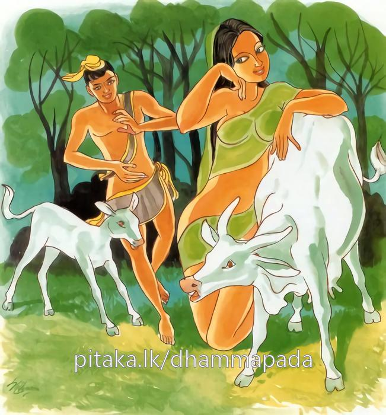

20-8 මහළු තෙරුන් පිළිබඳ කථා පුවත
මෙම කතාව සද්ධර්ම සාගරයෙන් ද කියවන්න.
වනං ඡින්දථ මා රුක්ඛං වනතො ජායතී භයං
ඡෙත්වා වනඤ්ච වනථඤ්ච නිබ්බනා හොථ භික්ඛවො.
මහණෙනි, කෙලෙස් වනය සිඳිවු. වැලි දු රුක් නො සිඳිවු. කෙලෙස් වනයෙන් බිය උපදී. (භවෝත්පත්තිය කරවන) මහ කෙලෙස් වනය ද, (ප්රවෘත්තිවිපාකදායක) මඳ කෙලෙස් වනය ද රහත් මඟ නැණ සැතින් සිඳ වනරහිතයෝ වවු.
යාවං හි වනථො න ඡිජ්ජති, අණුමත්තො’පි නරස්ස නාරිසු
පටිබද්ධමනො’ව තාව සො වච්ඡො ඛීරපකො’ව මාතරි.
ස්ත්රීන් කෙරෙහි පුරුෂයාගේ ස්වල්පමාත්ර වූ ද තෘෂ්ණාවෙක් යම්තාක් කල් නො සිඳී පවත්නේ ද, ඒ තාක් ම හෙ තෙම මව කෙරෙහි (ප්රේමයෙන් ඇලුනු) කිරි බොන ලමා වස්සකු මෙන් ස්ත්රීන් කෙරෙහි පිළිබඳ සිතැත්තේ ම වේ.

"වනං ජීන්දථ” යන මේ ධර්ම දේශනය ශාස්තෲන් වහන්සේ සැවැත්නුවර ජේතවනාරාමයේ වැඩසිටියදී බොහෝ මහළු තෙරවරුන් නිමිති කරගෙන දේශනා කළහ.
මේ භික්ෂූන් ගිහිකල සැවැත් නුවර කුටුම්බිකයෙන් වී සම්පත් ඇති මහත් ධනවතුන් දෙස එකිනෙකා යාළුවන්ව එකට පිංකම් කරමින් බුදුන්ගේ ධර්මදේශනය අසා අපි මහළු අයයි ගිහිගෙයි විසීමෙන් කවර අර්ථයක්ද බුදුන්ගෙන් පැවිද්ද ඉල්ලා ගෙන පැවිදි වෙමු යයි පැවිදි වුවාහුය. මහළු නිසා ධර්මය පරිපුර්ණ කිරීමට නොහැකි වන්නේ විහාරය කෙළවර පන්සලක් කරවා එකළොව වාසය කළාහුය. පිඩුපිණිස හැසිරෙන්නේද බෙහෙවින් තම දුදරුවන් ගේ නිවෙස් වලටම ගොස් අහාර ගත්හ. ඔවුන් අතර එක් අයකුගේ පෙරබිරිඳ මධුරපාවිකා නම් වුවාය. ඕතොමෝ මේ සියල්ලන්ගේම පිහිට පිණිස වුවාය. මේ නිසා සියළු දෙන තමන් ලත් ආහාරය ගෙන ගොස් ඇගේ නිවසේ වාඩිවී ආහාර වළඳති. ඇයද ඔවුන්ට තබන ලද සුපව්යංජන දෙන්නීය. ඇය එක්තරා ආබාධයක් නිසා කළුරිය කළාය. අනතුරුව මහළු තෙරුන් හිතවත් තෙරුන්ගේ පන්සලට රැස් වී එකිනෙකා ගෙල වැළඳගෙන මධුරපාවික උවැසිය කළුරිය කළායයි වැළපෙමින් හැඩුහ. භික්ෂූන් වහන්සේලා හාත් පසින් දිව අවුත් මේ කුමක්ද ඇවැත්නියි විමසා ස්වාමීනි අපට සහායික වු පුරාණ දුතිකාව කළුරිය කළාය. ඇය අපට අතිශයින් උපකාරී වුවාය. මෙබඳු කාන්තාවක් අපි කොහින් ලබන්නද? මේ කරුණ නිසා හඩමුයි පැවසුහ. භික්ෂුහු ධම්සභා මණ්ඩපයේ කථාවක් ඉපදවුහ. බුදුහු දසභාවට පැමිණ මා එන්නට පෙර කුමන කථාවකින් සිටියෝදැයි විමසා අදාළ කරුණ පැවසුවිට මහණෙනි දැන් පමණක් නොව පෙරද කාක යෝනියේ ඉපිද මුහුදු තෙර හැසිරෙන්නේ මුහුදු රළින් මුහුදට ගසාගෙන ගොස් මැරුණ නිසා කපුටෝ හඩා වැළපී ඇය පිටතට ගන්නෙමුයි හොටෙන් මුහුද ඉසිමින් වෙහෙසුනහ මුහුදු ජලය ඉසීම නිසා අපගේ හකු විඩාවට පැමිණියේය. මුඛයද වියළෙයි. මුහුද දිය ඇඳලන්නට වීර්යය කර. දිය හිකළ නොහෙම්මය. මුහුද පිරේ. මෙම කාක විස්තර කොට එම භික්ෂූන් අමතා මහණෙනි! රාග දොස මෝහ නම් කෙලෙස් වනය නිසා තොප විසින් මේ දුකට පැමිණෙන ලදහ. එම කෙලෙස් වනය සිදීම සුදුසුවේ. මෙසේ නිදුක් වේවායි පවසා මේ ගාථාව පැවසුහ.
සිඳිනු මැන කෙලෙස්වන - වඩනු මැන බවුන්මග
ලොකු කුඩා හැම කෙලෙස් - බිදැර යනු නිවන්මග
ඉතිරියක වෙත බැදුණු - ආදරය බිදියයුතු
තිබෙන තෙක් එය හිතේ - නිවන් හිමිවනු නැතේ
මහණෙනි වනය සිදිවි. ගස් නොකපව් කෙලෙස්වනයෙන් බිය ඇතිවේ. කෙලෙස් වනයද වන්යපථයද - සිඳදමා කෙලෙස්වන රහිතවමු.
පුරුෂයාගේ ස්ත්රීන් විෂයෙහි වු ස්වල්ප මාත්රවුද කෙලෙස් නැමැති වනයෙක් යම්තාක් කල් නොසිඳිපවක්ද? ඒ තාක් කල් හෙතෙම මව කෙරෙහි ඇලුණු කිරිඋරාබොන මැස්සමෙන් ස්ත්රීන් කෙරෙහි පටිබද්ධ සිත් ඇත්තේමය. ඇලුණු සිත් ඇත්තේ මය.
එහි මාරුක්ඛං යනු බුදුන් විසින් වනය සිඳින්නැයි පවසන ලද්දේ මෑතදී පැවිදිවු භික්ෂූන්ට බුදුහු අප විසින් පොරෝ ගෙන වනය සිදිනැයි ගස් කැපීමේ කැමැත්ත ඇතිවිය ඉක්බිති මවිසින් රාගාදී කෙලෙස් වනය සඳහා කියන ලදි රුක් නොවේ යනුවෙන් ප්රතිශේධ කරමින්. මා රුක්ඛන්ති ආහ. වනතො - ප්රකෘතික වනයෙන් සිංහ ආදින්ගෙන් බියක් ඇතිවේ. මෙලෙස ජාති ආදී බිය. කෙලෙස් වනයෙන් ඇතිබිය යන අර්ථයි. වනංව වනතං චාති - මෙහි මහත් රුක් වනථ වනයේ ඇති කුඩා ගස් වනථ නම්, මුලින් හටගත් ගස් වනය නිමිති ඒ ඇසුරෙන් හැදුන ගස් වනථ නමින්ද හැදින්වේ. එය මේ දෙකම සතර වැනි මාර්ග ඤාණයෙන් සිදිය යුතුය.
යාවංහි වනථොති - යම්තාක් අණුමාත්රවුද කෙලෙස් වනයෙන් යුක්ත වු මිනිසුන්ට ගැහැණුන්ගෙන් සිත නොබිදේමය. කිරි උරා බොන වස්සා මව් දෙනට බැඳුන අයුරින් ඇලුන සිත් ඇතිබවයි යන අර්ථයි. දේශනාවසානයේ පන්සියයක් මහළු තෙරවරු සෝවාන් ඵලයෙහි පිහිටියාහුය. පැමිණි අයටද දෙසුම සාර්ථක විය.